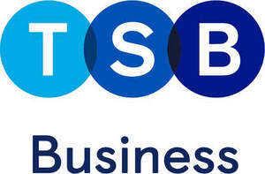

Trade Mark Journal No.2025/020 16 May 2025
UK00004163032 20 February 2025 (9,16,35,36,38,42,45)
Mark 1
Mark 2

- Class 9
- Computer hardware and computer software; computer software relating to financial services; computer software relating to financial history; computer software relating to the handling of financial transactions; software relating to the making of payments using mobile devices; mobile apps; computer terminals for banking purposes; banking cards [encoded or magnetic]; encoded cards for use in relation to the electronic transfer of financial transactions; automated teller machines (ATM); payment terminals, money dispensing and sorting devices; apparatus for electronic payment processing; electronic machines for recording financial operations; counterfeit money detecting apparatus; money counting and sorting apparatus; mechanical, electric, digital and LED display signs.
- Class 16
- Printed matter; printed publications; advertising publications; advertising pamphlets and posters; printed cards, printed credit and debit cards; advertising signs of paper or cardboard; stationery; pens; pencils; travellers' cheques; cheques; cheque books; chequebook holders and covers.
- Class 35
- Advertising and marketing; online advertisements; advertising relating to financial services; presentation of financial products on communication media, for retail purposes; price comparison services; promotion of goods and services through sponsorship; business management; providing business management start-up support for other businesses; preparation, drawing up and provision of statement of accounts; financial statement preparation and analysis for businesses.
- Class 36
- Financial services; online financial services; banking services; online banking services; online financial transactions; investment banking; investment services; investment advice and consultancy; fund investment; mortgage banking; savings bank services; business banking services; online business banking services; personal banking services; bank account and savings account services; current, cheque and deposit account services; fund transfers; direct debit services; money lending; arranging and financing of personal loans; bank card, credit card, debit card and electronic payment card services; credit rating; insurance services; administration of insurance plans; advice relating to insurance; appraisals for insurance purposes; home insurance services; home content insurance; insurance relating to property; insurance for legal expenses; life insurance; travel insurance; currency exchange and advice; currency trading and exchange services; insurance consultation; insurance management services; personal insurance services; issuing of tokens of value in relation to customer loyalty schemes; issuance of bonds; stocks and bonds brokerage; debt consolidation services; financial sponsorship; financial sponsorship of cultural, sporting, and entertainment activities and events; charitable fundraising; issuing of statement of accounts; pension services; pension funds; pension planning; pension scheme services; pension management services; pension investment management; pension fund administration services; debt advisory services; debt restructuring; debt recovery; debt management services; information, advisory and consultancy services in connection with all of the aforesaid services.
- Class 38
- Telecommunications; telecommunication services relating to providing access to financial information, financial services, financial transactions and financial products; provision of access to content, websites and portals; providing access to websites on the Internet or any other communications network; provision of telecommunications access and links to computer databases and the Internet; data transmission; electronic communication services; Internet communication services; data communication by electronic means; telecommunication services between financial institutions; electronic communication services for financial institutions; broadcasting financial information by satellite, radio and television; all the aforesaid services relating to finance, banking, insurance and investment.
- Class 42
- Electronic monitoring of credit card activity to detect fraud via the internet; computer virus protection services; IT and computer services; design, development and maintenance of databases; design of information systems relating to finance; providing temporary use of non-downloadable software for analysing financial data and generating reports; development of software for secure network operations; data and computer security services; electronic monitoring of personally identifying information to detect identity theft via the internet; consultancy, advisory and information services relating to all of the aforesaid, all being in relation to finance, banking, insurance and investment.
- Class 45
- Legal services; legal advice; legal information services; legal services relating to business; legal services relating to banking and finance; identity verification and validation services; consultancy in the fields of identity verification, data theft and fraud prevention; fraud detection services in the fields of insurance and finance; investigation services related to insurance claims.
TSB Bank plc
Representative: TLT LLP